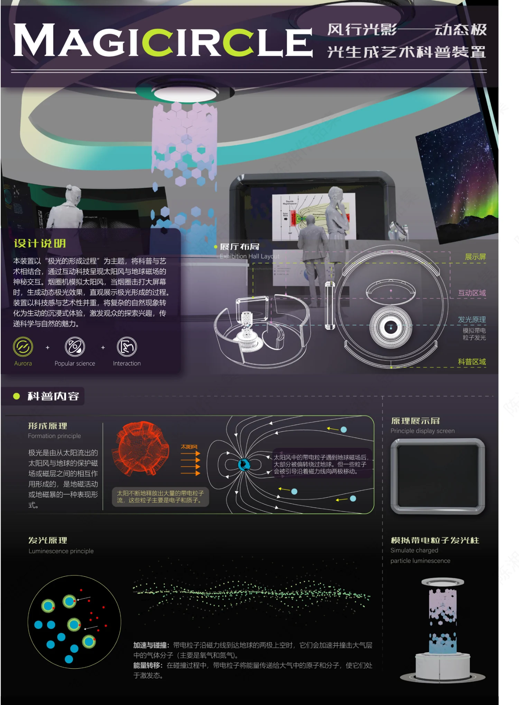
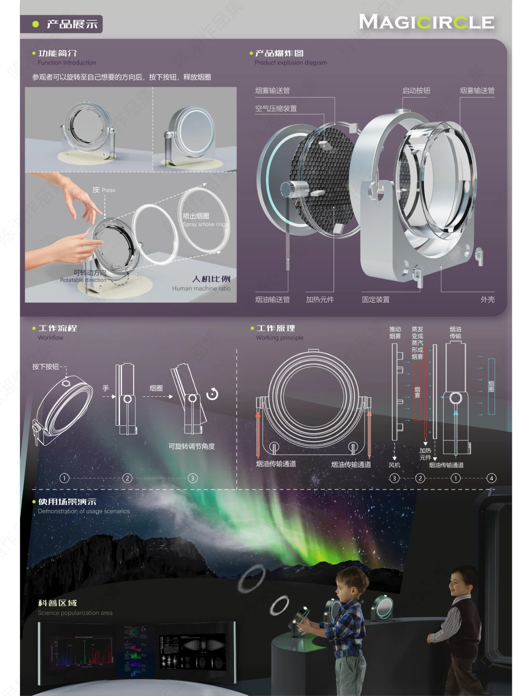

PROJECT 07 / MAGICIRCLE
Magicircle · 风行光影
将极光形成原理转化为可参与的科普展示体验。

把自然原理转成体验
装置以极光形成过程为主题，将科普信息、展厅布局与互动装置组合，尝试让抽象的自然现象变得可感知。
旋转、按压与烟圈
方案让参观者旋转装置选择方向，通过按键触发烟圈，结合模拟带电粒子发光的展示与原理屏幕，构成互动与学习过程。
展示结构与场景
展板包含装置爆炸图、工作原理、操作流程、人机比例和展厅使用场景。效果图展示的是概念体验，不代表装置已投入使用。
PROCESS / 设计过程与展板
CLICK TO VIEW FULL SIZE以下为作品集中记录的设计方案与过程。图片可点击放大查看，保留原稿内容与水印。


内容来源：《陈湘作品集（展板）》第 3 页。未明确的项目时间、个人分工及落地结果未作推断。